How others show a day of periods and a month
Survey for PLAN-periods Q3.1, captured 2026-10-10 at phone width (390 px). First come the directions to choose from; below them, each screenshot with one line on what works and one on what fails. Tap a screenshot to see it whole. The coloured shapes in the directions are sketches of the idea, not real times.
Directions — day view
D1 · Verdict band + lanes
The day on one time axis. The top band is the combined answer; under it, one thin lane per system, so you see which period made a part good or bad. Tap a part to see why.
Drik graphGantt chartHypnogram
D2 · Dial with rings
Keep today's circle. The outer ring becomes the combined answer, the inner ring shows the systems. The sun marks "now", as it does today.
VedaCal dialtimeanddate strip
D3 · Answer first, list below
● Good 12:43–13:27 · 15:49–17:11
● Avoid 10:21–11:43 · 14:27–15:49
A sentence says what now is and why. Under it, the day's good and bad windows in time order. Each window opens to its periods and sources. No chart needed to get the answer.
DekhoPanchang briefingProkerala "right now"Shubh "current" cards
D4 · Coloured rows
The day as a list of parts, one full-width row each, coloured by the combined answer. Each row names the periods active in it.
Prokerala ChoghadiyaDrik Choghadiya
Directions — month view
M1 · Coloured month grid
Today's month grid, with each day coloured good / neutral / avoid. Tap a day to open it. Shows the month's shape at a glance; the reasons live one tap away.
GitHub heatmapVedaCal month
M2 · Day list with mini strips
One row per day: the date, the day's answer in a word, and a tiny strip of its good and bad parts. Shows the best window of each day, not only the day's verdict.
yr.no day rowsProkerala listtimeanddate strip
Panchang sites
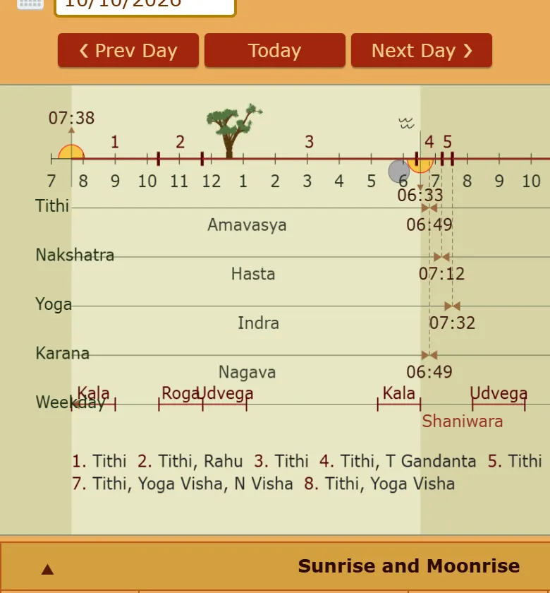
Drik · day graph
Works: tithi, nakshatra, yoga, karana and weekday share one time axis — you see when each changes.
Fails: tiny text, numbered footnotes, no colour for good or bad.
drikpanchang.com · Vilnius
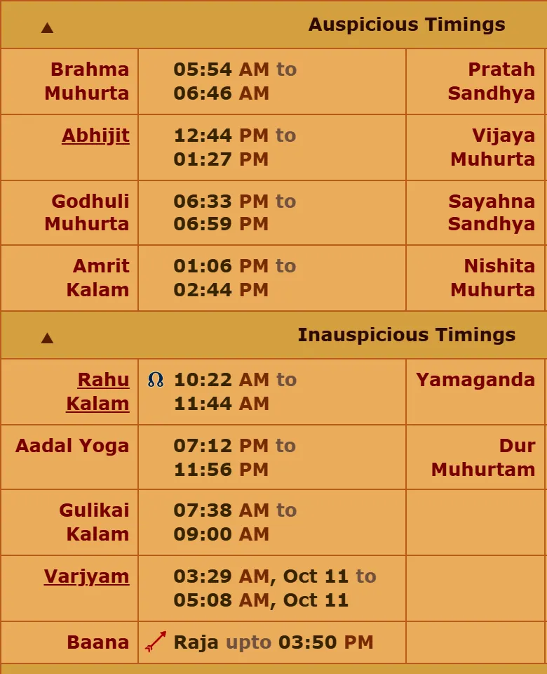
Drik · good and bad lists
Works: a clear split into auspicious and inauspicious times.
Fails: two lists of times; you compare them in your head to find overlaps.
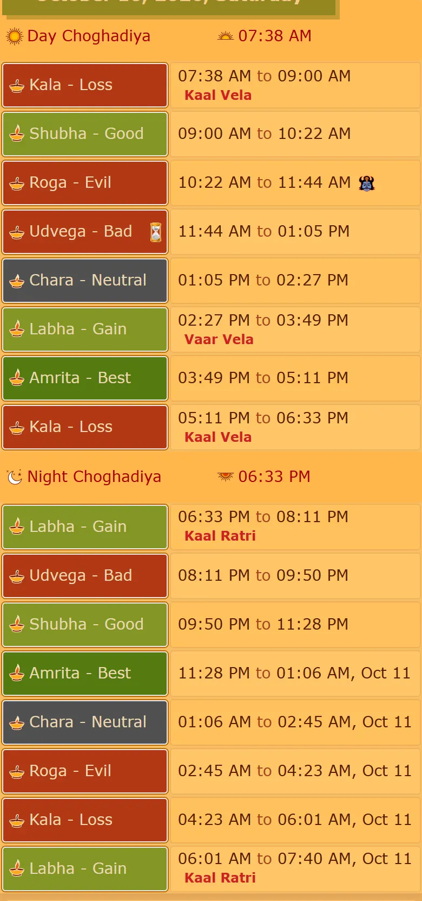
Drik · Choghadiya
Works: each part has a rating colour; notes like "Kaal Vela" sit under the time.
Fails: one system only; the overlap note is small and does not change the colour.
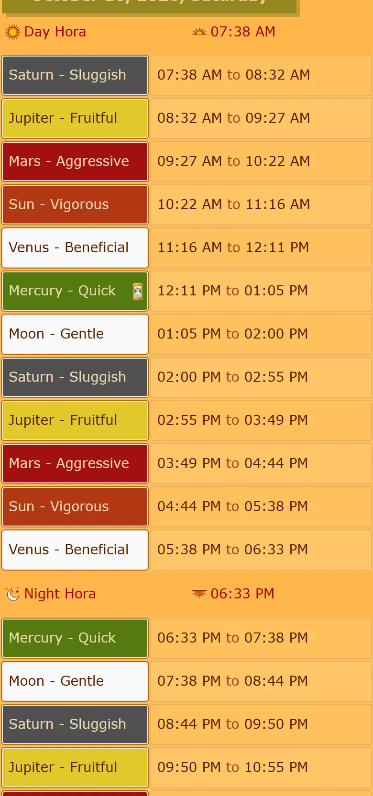
Drik · Hora
Works: same clear row pattern as Choghadiya.
Fails: 24 rows — a long scroll; a separate page from Choghadiya, though the times overlap.
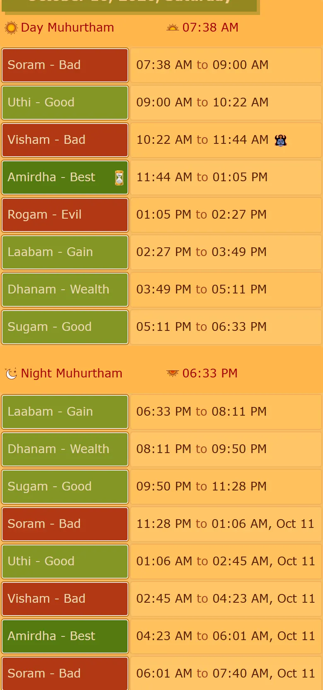
Drik · Gowri (Tamil)
Works: same pattern; ratings named in plain words (Good, Bad, Best).
Fails: a third separate page for one more system of the same day.
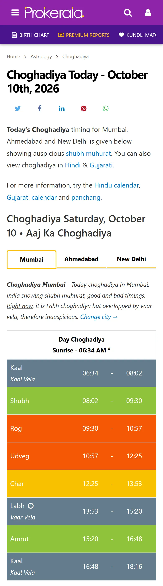
Prokerala · Choghadiya
Works: full-width colour bars read at once. The only combined verdict found in the field: "Right now it is Labh choghadiya but overlapped by vaar vela, therefore inauspicious."
Fails: that sentence covers only "now"; the overlapped row stays coloured as good.
prokerala.com · Mumbai
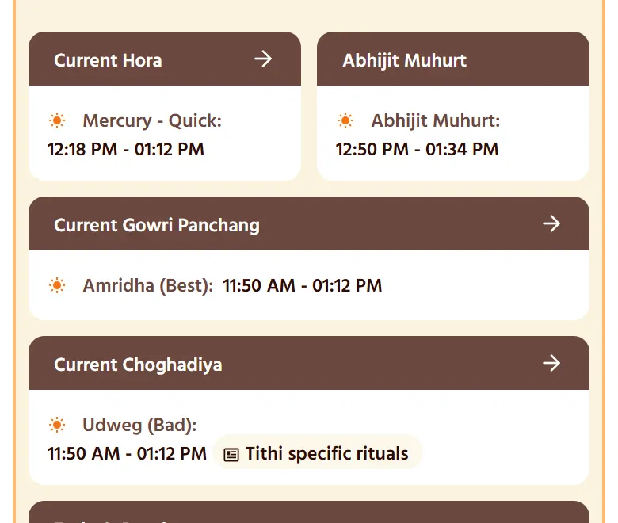
Shubh Panchang · "current" cards
Works: answers "what is now" for each system.
Fails: four separate answers that disagree (Abhijit good, Choghadiya bad); the user must combine them.
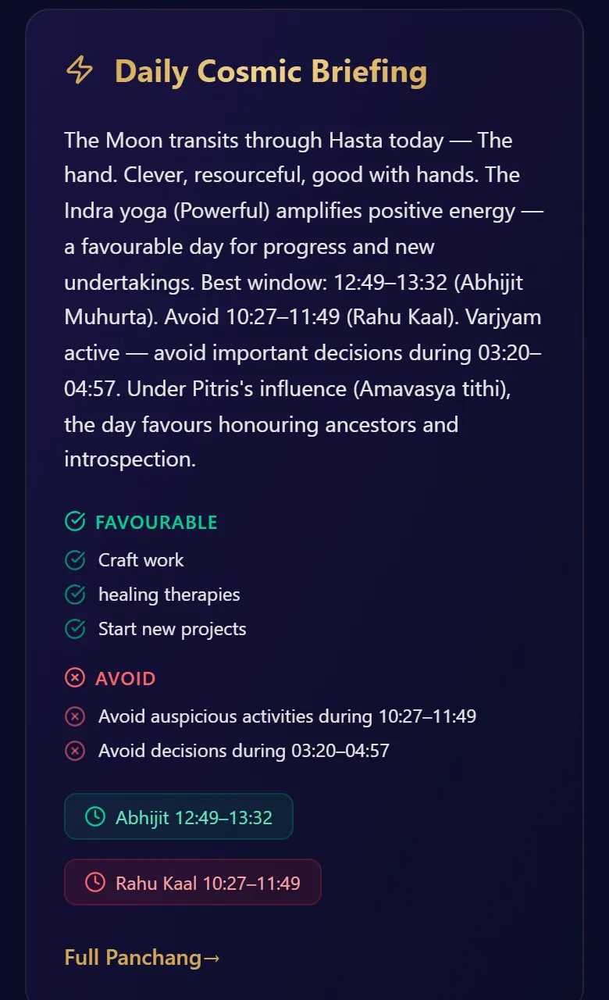
DekhoPanchang · daily briefing
Works: the answer first, in words; good and bad both listed; the best window and Rahu Kaal as chips.
Fails: no sources; generic text; only two windows; no picture of the day.
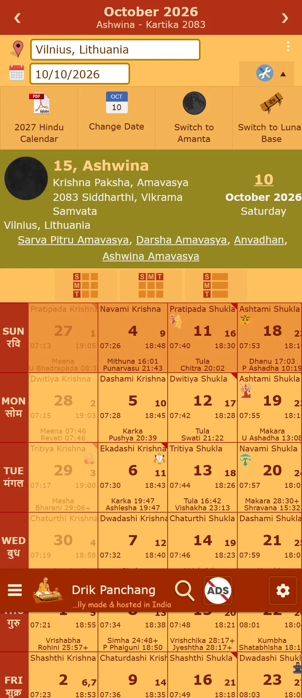
Drik · month
Works: tithi, nakshatra, sunrise and sunset for every day in one place.
Fails: unreadable on a phone; no verdict for any day.
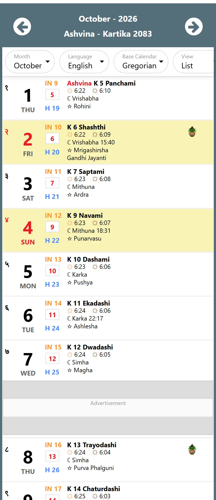
Prokerala · month as a list
Works: one row per day — readable on a phone, room for text.
Fails: no verdict; the yellow highlight only means "festival".
prokerala.com · Ujjain
Outside the field
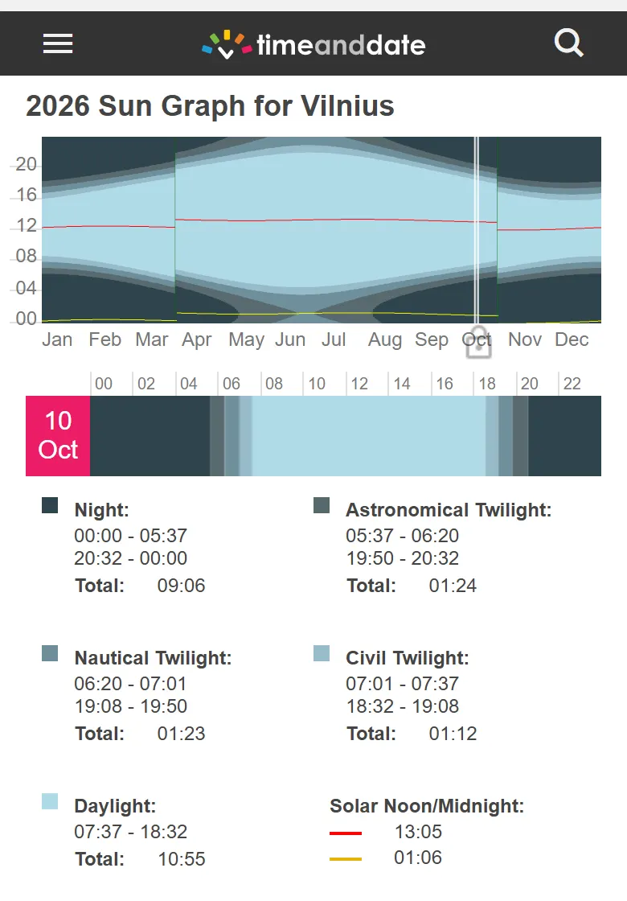
timeanddate · one-day strip
Works: the whole 24 hours in one bar; night, twilight and day as shades; totals in the legend.
Fails: the bar has no labels; you match it to a legend below.
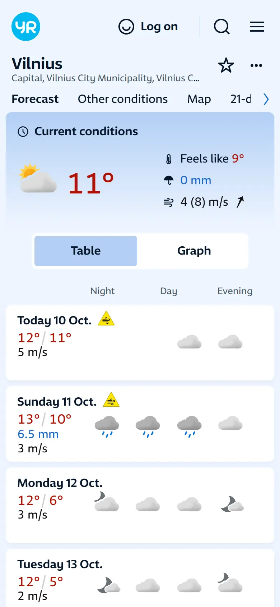
yr.no · days in parts
Works: each day is a row with night, day and evening — a day summed up in three parts.
Fails: icons, not colours; cannot hold many short periods.
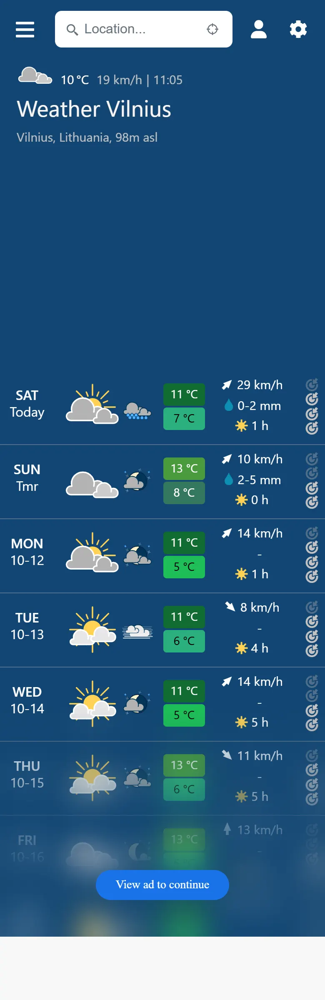
meteoblue · week rows
Works: compact rows, easy to scan down for the best day.
Fails: nothing about the parts of a day; an ad covers the list.
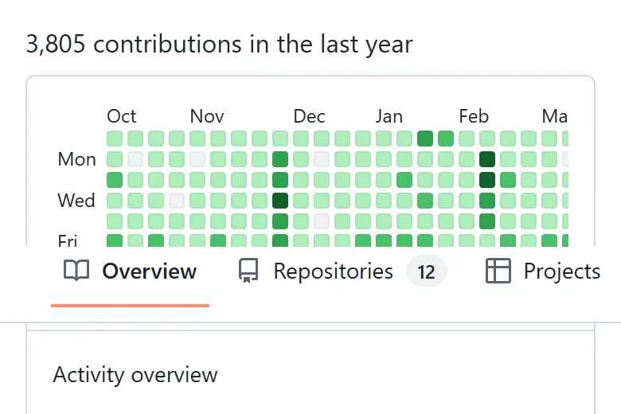
GitHub · calendar heatmap
Works: colour per day shows the pattern of a whole period at once.
Fails: on a phone the cells are tiny and clipped; colour says how much, never why.
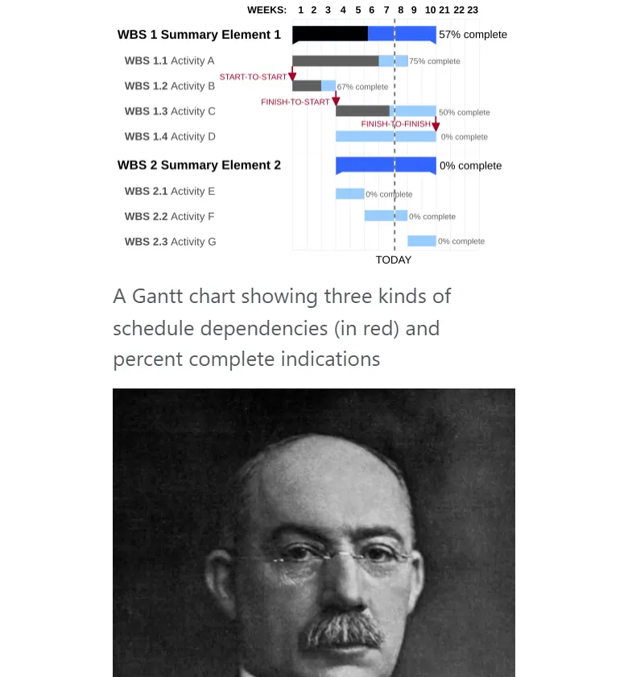
Gantt chart · lanes
Works: one row per item on a shared time axis, with a "today" line — like one lane per system.
Fails: needs width; on a phone the labels must be very short.
Wikipedia (CC BY-SA)
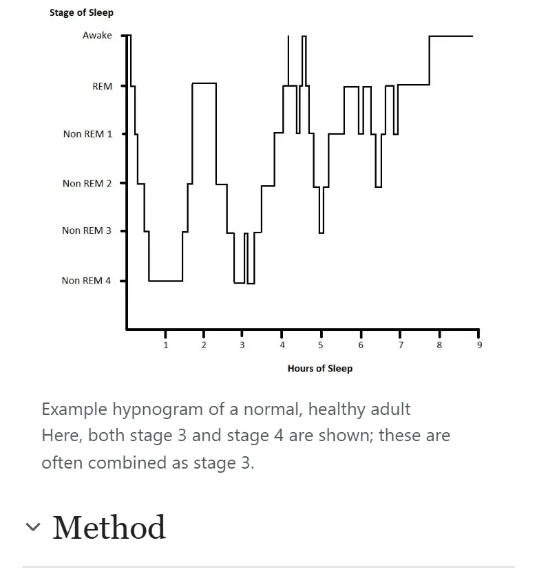
Sleep hypnogram · one level line
Works: one line steps between levels over time — like good / neutral / avoid through the day.
Fails: hides what caused each level.
Wikipedia (CC BY-SA)
VedaCal now
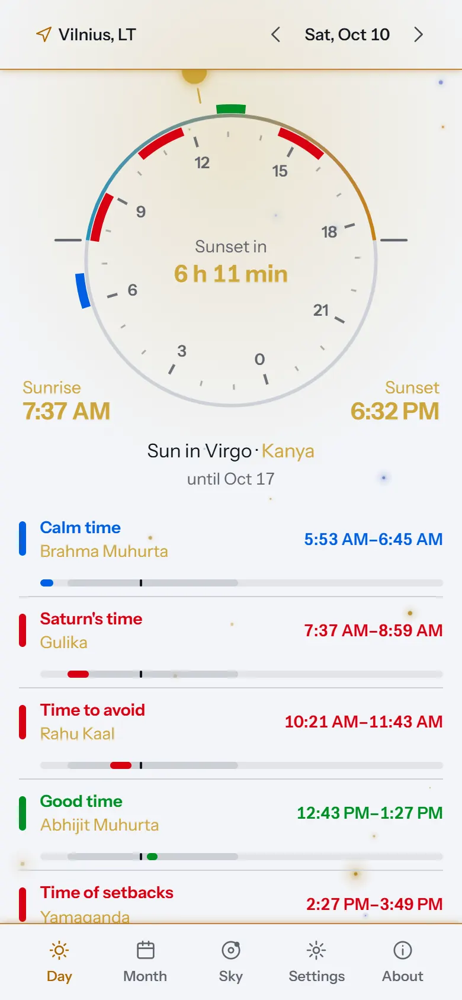
Day · dial and list
Works: the whole day on one circle; marks for periods; the sun shows "now".
Fails: Choghadiya is not on the dial; the list repeats the dial's times; no combined answer.
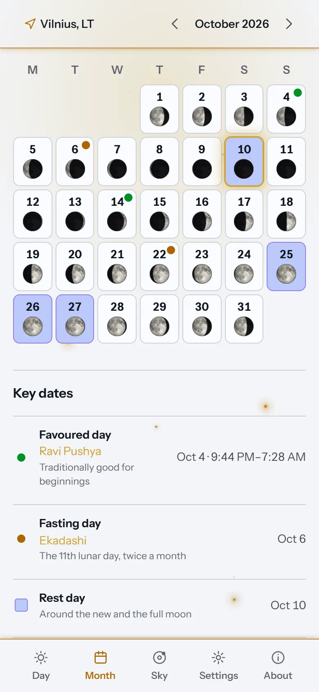
Month · grid with dots
Works: clean and readable; moon phase on every day.
Fails: avoid days are hidden (now reopened); a dot does not say good or bad.
Not captured
- Apple Weather hour strip, sleep apps — app only, no web page.
- Google Calendar day view — needs a login.
- Windy — a map behind a consent screen, no day strip without clicks.
- Tide sites — the page tried returned "not found".